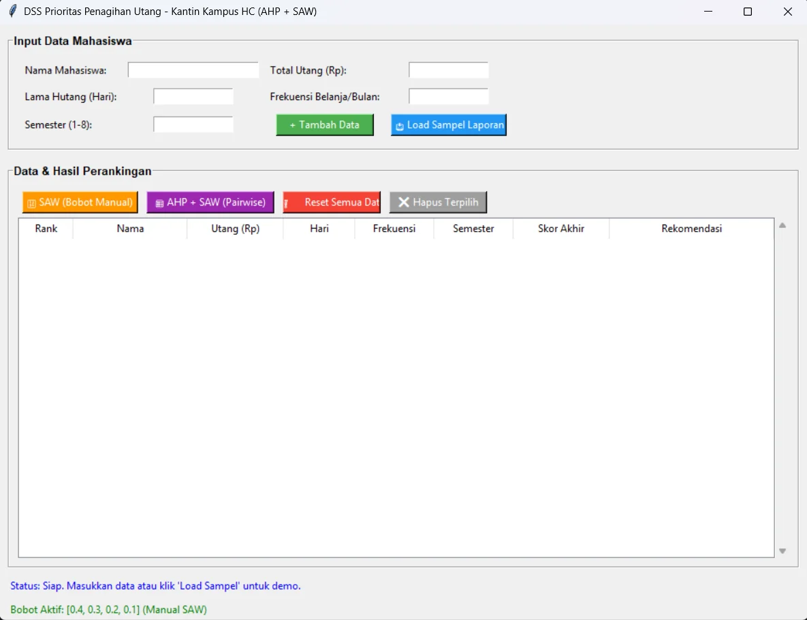

Tampilan aplikasi: form input data mahasiswa dan tabel hasil perankingan.
- 2026
- Python
- Tkinter
- SAW
- AHP
Aplikasi desktop berbasis Python yang menghitung urutan prioritas penagihan utang mahasiswa di kantin kampus memakai metode SAW (Simple Additive Weighting), dengan pilihan bobot kriteria dari AHP.
Latar belakang
Kantin kampus yang membolehkan mahasiswa berutang perlu memutuskan siapa yang ditagih lebih dulu. Menilai hanya dari besar utang sering kurang adil, jadi aplikasi ini menggabungkan beberapa kriteria sekaligus dan menghasilkan peringkat yang bisa dipertanggungjawabkan.
Kriteria penilaian
- C1 Total utang (Rp)
- C2 Lama hutang (hari)
- C3 Frekuensi belanja per bulan
- C4 Semester (1–8), diubah ke skala prioritas: semester 1–4 = 0,33; 5–6 = 0,67; 7–8 = 1,0
Semua kriteria diperlakukan sebagai kriteria keuntungan (benefit): makin besar nilainya, makin tinggi prioritas penagihan.
Cara kerja
- SAW dengan bobot manual: nilai tiap kriteria dinormalisasi (dibagi nilai maksimum kriterianya), lalu dikalikan bobot. Bobot bawaan 0,4 / 0,3 / 0,2 / 0,1.
- AHP + SAW: pengguna mengisi matriks perbandingan berpasangan 4×4 (skala Saaty 1–9, bagian kebalikannya terisi otomatis). Bobot dihitung dengan rata-rata geometrik, lalu diuji konsistensinya (λmax, CI, CR). Bobot hanya dipakai kalau CR < 0,1; kalau tidak, pengguna diminta merevisi penilaiannya.
- Hasil: tabel peringkat berisi skor akhir dan rekomendasi tindakan: tagih segera, koordinasi, tawarkan angsuran, teguran tertulis, atau pantau saja.
Rij = Xij / max(Xj) Vi = (w1 x Ri1) + (w2 x Ri2) + (w3 x Ri3) + (w4 x Ri4)
Contoh hasil (data sampel bawaan, bobot manual)
| Rank | Nama | Utang (Rp) | Hari | Frek. | Sem. | Skor |
|---|---|---|---|---|---|---|
| 1 | Budi | 500.000 | 30 | 10 | 8 | 0,7000 |
| 2 | Citra | 750.000 | 14 | 8 | 6 | 0,6670 |
| 3 | Eka | 300.000 | 20 | 15 | 4 | 0,5263 |
| 4 | Dani | 100.000 | 45 | 2 | 8 | 0,4800 |
| 5 | Ani | 200.000 | 5 | 4 | 2 | 0,2263 |
Fitur lain
- Tambah data mahasiswa dengan validasi input, hapus baris terpilih, dan reset semua data.
- Tombol "Load Sampel Laporan" untuk mencoba dengan 5 data contoh.
- Ditulis hanya dengan pustaka standar Python (Tkinter dan math), tanpa instalasi tambahan.
Menjalankan
python dss_kantin_hc.py
Butuh Python 3 dengan Tkinter (sudah termasuk di instalasi Python standar untuk Windows).